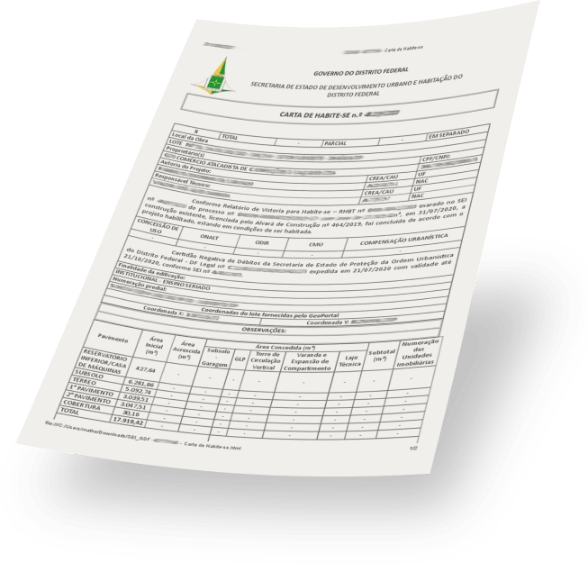
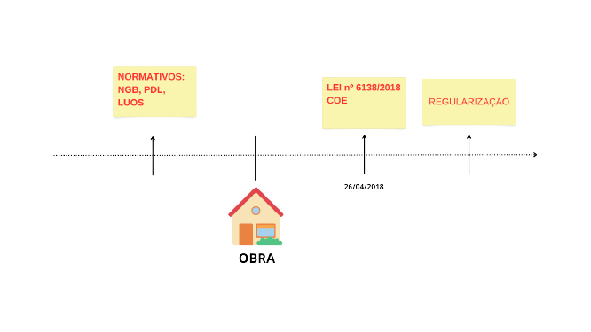
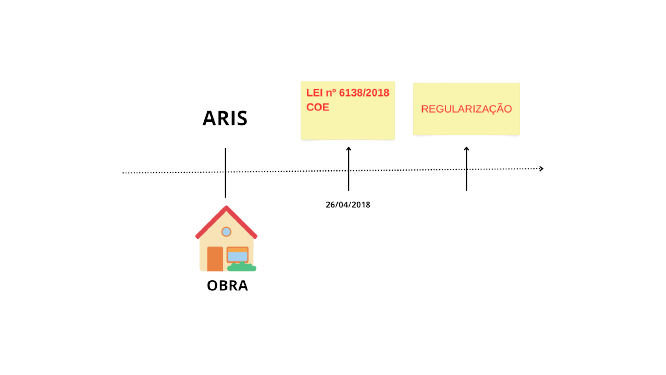
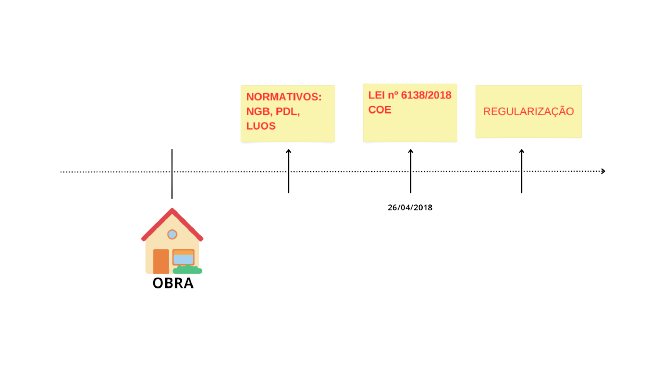

Está procurando regularizar o seu imóvel para retirada de habite-se?
Está procurando regularizar o seu imóvel para retirada de habite-se? Se sim, então você está no lugar certo! Nós lhe ajudaremos a regularizar o seu imóvel para retirada do Habite-se, com segurança e agilidade. Temos uma equipe qualificada que faz a análise de toda a documentação necessária, garantindo a segurança do seu imóvel, a emissão do documento em tempo recorde sem burocracia e o atendimento personalizado a cada caso. Venha conferir os serviços que oferecemos e regularizar o seu imóvel agora mesmo!
Benefícios em se ter habite-se
-
Valorização:

Um imóvel regularizado possui aumento médio de 15% a 30% de seu valor de mercado;
-
Acesso a financiamentos:

Muitas instituições financeiras exigem que o imóvel seja regularizado antes de conceder financiamentos a terceiros;
-
Facilidade na venda:
Imóveis regularizados são mais atrativos para compradores, pois estão em conformidade com as leis e regulamentos;
-
Segurança jurídica:
A regularização garante que o imóvel esteja em conformidade com as leis e regulamentos locais evitando assim multas e outras penalidades por parte da administração pública;
-
Maior tranquilidade ao proprietário e ocupantes:
O imóvel quando regularizado, possui a comprovação legal de que é seguro, estável e está em plenas condições de ser habitado;
-
Documentação técnica do imóvel:
Durante o processo são produzidas inúmeras documentações técnicas que caracterizam o imóvel, como por exemplo as plantas arquitetônicas, de locação e de engenharia (quando necessário);
-
Regularização do uso do solo:
A regularização do imóvel garante o cumprimento dos parâmetros urbanísticos de uso e ocupação do solo (para imóveis mais novos ou a serem construídos);
-
Redução de impostos:
A regularização pode resultar em redução de impostos, como o IPTU, devido à correção de informações sobre o imóvel.
O que é necessário para solicitar o habite-se?
O Habite-se pode ser solicitado por qualquer pessoa que seja proprietária de imóvel residencial localizado em zona já regular no Distrito Federal. Para isso, é necessário que o solicitante possua documento comprobatório de direito de posse, de concessão pública ou de propriedade do terreno (reconhecidos pelo cartório de imóveis) e apresente os documentos exigidos pela administração regional para a emissão da carta de Habite-se, sendo alguns dos quais apresentados abaixo:
- Documento de titularidade pública (ex: escritura);
- Requerimentos padrões preenchidos;
- Projeto de arquitetura;
- Projetos de engenharia: fundações, estrutural, elétrico, hidrossanitário (para novas construções somente);
- Projeto de reservatório de retenção e recarga artificial de águas pluviais (ou dispensa) - Obs: exigência somente para lotes acima de 600m²;
- Anuência de órgãos e empresas públicas (COMAER, CEB, CAESB, CBMDF, NOVACAP);
- Laudo técnico que ateste a segurança e estabilidade da edificação;
- Laudo topográfico / Croqui de locação / Levantamento topográfico;
- Assinaturas de responsabilidade técnica;
- Nada consta do DF Legal;
- Alvará de construção (novas construções);
- Outros.
Como ocorre o processo de obtenção do habite-se?
A emissão de habite-se é separada em dois tipos: convencional e de regularização.O convencional é concedido somente para edificações que passaram pelo processo de emissão do alvará de construção. Já o de regularização é para edificações construídas e habitadas sem passar pelo processo convencional, que inclui critérios específicos de enquadramento, os quais encontram-se abaixo:
-
Art. 151
Rito de regularização edilícia destinado a obras iniciais ou de modificações executadas sem o devido licenciamento prévio em lotes que já dispunham de norma de uso e ocupação de solo à época do início das obras.
 -
Art. 152
Regularização de habitação unifamiliar situadas em área oriundas de regularização de interesse social, a partir do disposto PDOT
 -
Art. 153
Rito de regularização das edificações concluídas e ocupadas até 26/04/2018, em unidades imobiliárias para as quais não havia norma de uso e ocupação do solo à época da construção.

Entre em Contato Conosco.
Analisar detalhadamente cada um desses casos é fundamental para que se possa determinar de forma precisa a categoria em que a edificação será enquadrada e, assim, regularizá-la corretamente. É possível que, em alguns casos, edificações construídas em terrenos que possuíam normas de uso e ocupação do solo vigentes na época da construção, necessitem de intervenções físicas para se adequarem ao normativo estabelecido. Diante do exposto, é vital que o processo seja conduzido por profissionais capacitados e experientes, a fim de garantir um resultado eficaz e com o mínimo de transtornos e dores de cabeças possíveis. E é aí que entramos, prontos para oferecer nossos serviços e experiência na área.